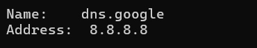

Ten Key Concepts
- Domain Name
- A readable name, such as example.com, within the DNS naming hierarchy.
- IP Address
- A numerical address used to identify a network interface. DNS A and AAAA records associate names with IPv4 and IPv6 addresses.
- Recursive Resolver
- A service that finds DNS answers for clients, using cached information or querying other servers.
- Root Name Server
- A server at the top of the DNS hierarchy that directs resolvers to top-level domain servers.
- Top-Level Domain (TLD)
- The final part of a domain name, such as .com, .org, or .edu.
- Authoritative Name Server
- A server that holds and provides the official DNS records for a particular zone.
- Caching and Time to Live (TTL)
- Caching temporarily stores DNS answers for reuse. TTL specifies how long a record may be cached before it needs to be refreshed.
- Negative DNS Caching
- A resolver can temporarily cache a response saying that a domain name or the requested record type is missing. This avoids repeating the same lookup until the cached response expires.
- DNS Delegation
- A parent DNS zone uses NS records to tell resolvers which name servers are responsible for a child zone.
- Reverse DNS Lookup
- A reverse lookup starts with an IP address and asks for its associated hostname. DNS uses a PTR record to provide that name when one is configured.

nslookup 8.8.8.8 returned the hostname
dns.google.